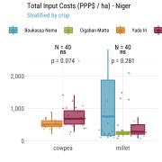
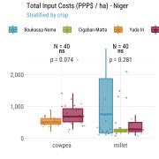
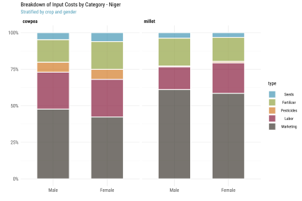
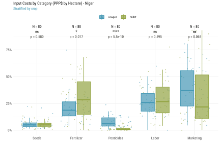
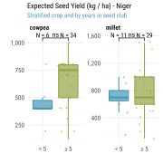
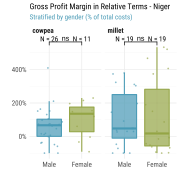
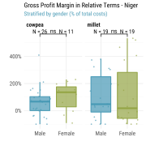
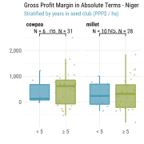

Niger
Notes:
- 1 Int’l $ = 257.60 XOF (CFA) using 2020 World Bank PPP conversion rates (1 Int’l $ = 1 USD)
- Focus crop = cowpea and millet
- All costs are reported per hectare. Inspection, certification and other marketing costs are assumed for the entire farm. Labeling and packaging are per kg.
- Some farmers grow multiple crops
Survey Recodes
xrate <- 257.60
# Load respondent data
hh <- fread("../data/nre/hh.csv")
group <- fread("../data/nre/group.csv")There are 24 variables and 80 observations in this set. A summary is shown below.
print(dfSummary(hh), max.tbl.height=500)Error : thematic doesn’t (yet) support the ‘PNG’ graphics device. Please report this error to https://github.com/rstudio/thematic/issues/new
| Variable | Stats / Values | Freqs (% of Valid) | Valid | Missing |
|---|---|---|---|---|
| Code [character] |
1. Chadakori_MI_FG1 2. Chadakori_MI_FG2 3. Chadakori_NI_FG1 4. Chadakori_NI_FG2 5. Sabon_Machi_MI_FG1 6. Sabon_Machi_MI_FG2 7. Sabon_Machi_NI_FG1 8. Sabon_Machi_NI_FG2 |
10 (12.5%) 10 (12.5%) 10 (12.5%) 10 (12.5%) 10 (12.5%) 10 (12.5%) 10 (12.5%) 10 (12.5%) |
80 (100.0%) |
0 (0.0%) |
| Group [character] |
1. Boukassa_Noma 2. Cigaban_Matta 3. HIMMA 4. Yada_Iri |
10 (12.5%) 10 (12.5%) 40 (50.0%) 20 (25.0%) |
80 (100.0%) |
0 (0.0%) |
| Crop [character] |
1. cowpea 2. millet |
40 (50.0%) 40 (50.0%) |
80 (100.0%) |
0 (0.0%) |
| District [character] |
1. Dakoro 2. Guidan Roumdji |
40 (50.0%) 40 (50.0%) |
80 (100.0%) |
0 (0.0%) |
| Location [character] |
1. Chadakori 2. Sabon Machi |
40 (50.0%) 40 (50.0%) |
80 (100.0%) |
0 (0.0%) |
| Date [IDate, Date] |
1. 2021-04-28 2. 2021-04-30 |
40 (50.0%) 40 (50.0%) |
80 (100.0%) |
0 (0.0%) |
| Age [character] |
1. 15-29 2. 30+ |
9 (11.2%) 71 (88.8%) |
80 (100.0%) |
0 (0.0%) |
| Sex [character] |
1. female 2. male |
32 (40.0%) 48 (60.0%) |
80 (100.0%) |
0 (0.0%) |
| Cost seed per ha (LCU) [integer] |
Mean (sd) : 7136.9 (5225.8) min < med < max: 1200 < 5000 < 25000 IQR (CV) : 6000 (0.7) |
30 distinct values | 80 (100.0%) |
0 (0.0%) |
| Cost of fertilizer per ha (LCU) [integer] |
Mean (sd) : 27441.9 (14019.1) min < med < max: 0 < 31250 < 75000 IQR (CV) : 18000 (0.5) |
35 distinct values | 80 (100.0%) |
0 (0.0%) |
| Cost of pesticide per ha (LCU) [integer] |
Mean (sd) : 6648.1 (8051.2) min < med < max: 0 < 3000 < 36000 IQR (CV) : 9500 (1.2) |
29 distinct values | 80 (100.0%) |
0 (0.0%) |
| Cost of transport per ha (LCU) [integer] |
Mean (sd) : 5822.8 (4742.9) min < med < max: 0 < 5000 < 25000 IQR (CV) : 3187.5 (0.8) |
25 distinct values | 80 (100.0%) |
0 (0.0%) |
| Labor cost (LCU) [integer] |
Mean (sd) : 35362.5 (20947.8) min < med < max: 0 < 30000 < 95000 IQR (CV) : 28500 (0.6) |
41 distinct values | 80 (100.0%) |
0 (0.0%) |
| Inspection / certification Fees (LCU) [integer] |
Mean (sd) : 2031.2 (2028.8) min < med < max: 0 < 2000 < 10000 IQR (CV) : 3000 (1) |
0 : 31 (38.8%) 500 : 1 ( 1.2%) 1000 : 1 ( 1.2%) 1500 : 4 ( 5.0%) 2000 : 5 ( 6.2%) 3000 : 25 (31.2%) 5000 : 12 (15.0%) 10000 : 1 ( 1.2%) |
80 (100.0%) |
0 (0.0%) |
| Labelling costs per kg (LCU) [integer] |
Mean (sd) : 123.9 (232.1) min < med < max: 0 < 0 < 1400 IQR (CV) : 131.2 (1.9) |
13 distinct values | 80 (100.0%) |
0 (0.0%) |
| Packaging costs per kg (LCU) [integer] |
Mean (sd) : 98.2 (100.3) min < med < max: 0 < 100 < 500 IQR (CV) : 112 (1) |
22 distinct values | 80 (100.0%) |
0 (0.0%) |
| Other marketing costs? (LCU) [integer] |
Mean (sd) : 931.2 (3474.8) min < med < max: 0 < 0 < 30000 IQR (CV) : 1000 (3.7) |
0 : 58 (72.5%) 1000 : 6 ( 7.5%) 1500 : 4 ( 5.0%) 2000 : 4 ( 5.0%) 2500 : 1 ( 1.2%) 3000 : 4 ( 5.0%) 5000 : 2 ( 2.5%) 30000 : 1 ( 1.2%) |
80 (100.0%) |
0 (0.0%) |
| Estimated Yield (kg/ha) [integer] |
Mean (sd) : 684.6 (280) min < med < max: 100 < 700 < 1500 IQR (CV) : 300 (0.4) |
19 distinct values | 80 (100.0%) |
0 (0.0%) |
| Selling price of seed per kg (LCU) [integer] |
Mean (sd) : 825 (354.2) min < med < max: 200 < 800 < 1500 IQR (CV) : 500 (0.4) |
200 : 1 ( 1.2%) 250 : 4 ( 5.0%) 300 : 1 ( 1.2%) 350 : 1 ( 1.2%) 500 : 21 (26.2%) 750 : 11 (13.8%) 800 : 3 ( 3.8%) 1000 : 28 (35.0%) 1500 : 10 (12.5%) |
80 (100.0%) |
0 (0.0%) |
| Selling price of grain per kg (LCU) at
sowing [integer] |
Mean (sd) : 419.4 (216.8) min < med < max: 200 < 362.5 < 1200 IQR (CV) : 250 (0.5) |
16 distinct values | 80 (100.0%) |
0 (0.0%) |
| Selling price of grain per kg (LCU) at
harvest [integer] |
Mean (sd) : 245.9 (189.5) min < med < max: 100 < 150 < 1000 IQR (CV) : 167 (0.8) |
17 distinct values | 80 (100.0%) |
0 (0.0%) |
| How many kg were sold in the season? [integer] |
Mean (sd) : 353.4 (289.8) min < med < max: 0 < 300 < 1500 IQR (CV) : 385 (0.8) |
22 distinct values | 80 (100.0%) |
0 (0.0%) |
| What was your expected gross margin? [integer] |
Mean (sd) : 137489.4 (145046.5) min < med < max: 50 < 73500 < 5e+05 IQR (CV) : 180000 (1.1) |
36 distinct values | 80 (100.0%) |
0 (0.0%) |
| How long have you been a member of this
group? [integer] |
Mean (sd) : 11.9 (7.9) min < med < max: 1 < 11 < 23 IQR (CV) : 15 (0.7) |
18 distinct values | 80 (100.0%) |
0 (0.0%) |
Recode variable names.
setnames(hh, lbl$label, lbl$code, skip_absent=T)Additional recodes for categorical variables.
setorder(hh, adm2_nm, adm3_nm, group, gender, crop)
hh[, `:=`(
hhid = paste("NRE", gsub(" ", "0", format(1:.N, width=3)), sep=""),
iso3 = "NRE",
crop = factor(crop),
adm2_nm = factor(adm2_nm),
adm3_nm = factor(adm3_nm),
group = factor(group, levels=c(
"Boukassa_Noma",
"Cigaban_Matta",
"Yada_Iri",
"HIMMA"
), labels=c(
"Boukassa Noma",
"Cigaban Matta",
"Yada Iri",
"Himma"
)),
gender = factor(gender, levels=c("male", "female"), labels=c("Male", "Female")),
age = factor(age, levels=c("15-29", "30+"), labels=c("< 30", "≥ 30")),
years = factor(member_years >= 5, levels=c(F, T), labels=c("< 5", "≥ 5"))
)]Constructed Variables
Farmers report both expected yields yield_ha_kg and actual sales in the last season sales_ha_kg, so we can construct both expected and realized costs in monetary terms costs_exp_ha_lcu and costs_real_ha_lcu. Note that we then use realized sales to calculate profitability metrics. We assume that in Niger marketing costs for both cowpea and millet are reported for the entire farm (not by kg as in Vietnam).
hh[,
tran_ha_lcu := as.numeric(tran_ha_lcu)
][,
tran_ha_lcu := fifelse(is.na(tran_ha_lcu), 0, tran_ha_lcu)
][, `:=`(
# Expected costs
costs_exp_ha_lcu =
# Per ha costs
seed_ha_lcu + fert_ha_lcu + pest_ha_lcu + tran_ha_lcu + labor_ha_lcu +
cert_lcu + mark_kg_lcu +
# Per kg costs
yield_ha_kg * (labl_kg_lcu + pckg_kg_lcu),
# Realized costs
costs_real_ha_lcu =
# Per ha costs
seed_ha_lcu + fert_ha_lcu + pest_ha_lcu + tran_ha_lcu + labor_ha_lcu +
cert_lcu + mark_kg_lcu +
# Per kg costs
sales_ha_kg * (labl_kg_lcu + pckg_kg_lcu)
)]
hh[, summary(costs_exp_ha_lcu)]## Min. 1st Qu. Median Mean 3rd Qu. Max.
## 21100 90719 172200 242594 299875 896000hh[, summary(costs_real_ha_lcu)]## Min. 1st Qu. Median Mean 3rd Qu. Max.
## 21100 71775 126550 161174 186500 729500Using realized costs and sales, we construct gross margin per ha margin_ha_lcu, total sales sales_ha_sh and profit margin margin_ha_sh per unit of (variable) input costs, and costs_ha_ppp, sales_ha_ppp and margin_ha_ppp in PPP terms to allow for comparisons across groups and countries.
We also construct a measure of total factor productivity tfp as expected output per unit of (expected) input costs. Strictly speaking it is only “partial factor productivity” here because we don’t include the rental cost of land, land preparation costs, irrigation costs, and the costs of animal and mechanical implements.
hh[, `:=`(
sales_exp_ha_lcu = yield_ha_kg * sales_kg_lcu,
sales_real_ha_lcu = sales_ha_kg * sales_kg_lcu
)][, `:=`(
margin_ha_lcu = sales_real_ha_lcu - costs_real_ha_lcu
)][, `:=`(
# Shares
sales_ha_sh = sales_real_ha_lcu / costs_real_ha_lcu,
margin_ha_sh = margin_ha_lcu / costs_real_ha_lcu,
# PPP$
costs_ha_ppp = costs_real_ha_lcu / xrate,
sales_ha_ppp = sales_real_ha_lcu / xrate,
margin_ha_ppp = margin_ha_lcu / xrate
)][, `:=`(
tfp = yield_ha_kg / (costs_exp_ha_lcu / xrate)
)]Note that 6 respondents indicate having no sales (and hence a negative gross margin) this past season (crop failure or decision not to sell?).
tmp <- hh[sales_ha_kg==0, .(
hhid, code, group, crop,
sales_exp_ha_lcu, sales_real_ha_lcu, margin_ha_lcu, yield_ha_kg)]
kbl(
setnames(tmp, lbl[data.table(code=names(tmp)), on=.(code), label]),
format.args=list(big.mark=","))| Unique farmer/crop ID | Code | Group | Crop | Gross sales | Gross sales per ha (realized yield) | Gross margin per ha | Estimated Yield (kg/ha) |
|---|---|---|---|---|---|---|---|
| NRE042 | Chadakori_MI_FG1 | Boukassa Noma | millet | 375,000 | 0 | -28,200 | 1,500 |
| NRE046 | Chadakori_MI_FG1 | Boukassa Noma | millet | 300,000 | 0 | -88,250 | 1,000 |
| NRE047 | Chadakori_MI_FG1 | Boukassa Noma | millet | 25,000 | 0 | -21,900 | 100 |
| NRE056 | Chadakori_MI_FG2 | Cigaban Matta | millet | 250,000 | 0 | -75,000 | 500 |
| NRE074 | Chadakori_NI_FG2 | Yada Iri | cowpea | 400,000 | 0 | -94,000 | 800 |
| NRE076 | Chadakori_NI_FG2 | Yada Iri | cowpea | 1,200,000 | 0 | -134,000 | 800 |
Below we append some of the information that was recorded at the group level.
# Same recodes in the group-level dataset
group[, Group := factor(Group, levels=c(
"Boukassa Noma",
"Cigaban Matta",
"Yada Iri",
"HIMMA"
), labels=c(
"Boukassa Noma",
"Cigaban Matta",
"Yada Iri",
"Himma"
))]
# Merge
hh[group, on=.(group=Group), `:=`(
group_year = `Established`,
group_size = `Members`,
seasons = `Seasons`,
irrigated = `Irrigation`,
market_access = `Market access`,
ttrade = `Transboundary trade`
)]
kbl(group, align="lllllc")| Group | Region | Department | Commune | Location | Market access | Irrigation | Seasons | Transboundary trade | Members | Established |
|---|---|---|---|---|---|---|---|---|---|---|
| Boukassa Noma | Maradi | Guidan Roumdji | Chadakori | Kouroungoussaou | – | – | 1 | Yes | 56 | 1998 |
| Yada Iri | Maradi | Guidan Roumdji | Chadakori | Chadakori | – | – | 1 | No | 80 | 1998 |
| Cigaban Matta | Maradi | Guidan Roumdji | Chadakori | Chadakori | – | – | 1 | No | 33 | 1998 |
| Himma | Maradi | Dakoro | Sabon Machi | Sabon Machi | – | – | 1 | Yes | 44 | 1999 |
Finally we normalize all cost line items into a “long” table hh_prod_cost for charting. Again we use farmers’ realized costs here.
# Normalize production cost table per ha
hh_prod_cost <- hh[, .(hhid,
Seeds = seed_ha_lcu,
Fertilizer = fert_ha_lcu,
Pesticides = pest_ha_lcu,
Labor = labor_ha_lcu,
Transport = tran_ha_lcu,
Certification = cert_lcu,
Labeling = sales_ha_kg * labl_kg_lcu,
Packaging = sales_ha_kg * pckg_kg_lcu,
Marketing = mark_kg_lcu
)]
hh_prod_cost <- melt(hh_prod_cost, id.vars=1, value.name="lcu", variable.name="type")And we lump all marketing costs into a single category.
levels(hh_prod_cost$type) <- levels(hh_prod_cost$type)[c(1,2,3,4,9,9,9,9,9)]
hh_prod_cost <- hh_prod_cost[, .(
lcu = sum(lcu, na.rm=T)
), by=.(hhid, type)
][, `:=`(
# Add cost shares and PPP terms
share = lcu/sum(lcu, na.rm=T),
ppp = lcu/xrate
), by=.(hhid)
][hh, on=.(hhid), `:=`(
# Add classes
group = group,
gender = gender,
age = age,
years = years,
crop = crop
)]Descriptive Statistics
Respondent Characteristics
Breakdown by categorical variables. Note that farmers in HIMMA grow both crops.
ggplot(
hh[, .N, by=.(group, age, gender, crop, years)],
aes(axis1=crop, axis2=gender, axis3=age, axis4=years, y=N)) +
geom_alluvium(aes(fill=group), width=1/4, alpha=.7, color="white") +
geom_stratum(width=1/4) +
geom_text(stat="stratum", aes(label=after_stat(stratum)), angle=90, size=2.2) +
scale_x_discrete(limits=c("Crop", "Gender", "Age", "Years in Seed Club")) +
labs(y=NULL, fill="Seed Club",
title = "Categories of Survey Respondents - Niger",
subtitle = "Stratified by seed club") +
theme_def(axis.text=element_text(face="bold"))
Showing contingency table between each pair of categorical variables (seed club group, gender, age age, and years in seed club years).
ttt_ftable(hh, vars=c("group", "gender", "years"))| group | gender | < 5 | ≥ 5 | Sum |
|---|---|---|---|---|
N = 80 | Mantel-Haenszel chi-squared = 6.74 | p-value = 0.0806 | ||||
| Boukassa Noma | Male | 3.8 | 3.8 | 7.5 |
| Female | 2.5 | 2.5 | 5 | |
| Sum | 6.2 | 6.2 | 12.5 | |
| Cigaban Matta | Male | 3.8 | 6.2 | 10 |
| Female | 1.2 | 1.2 | 2.5 | |
| Sum | 5 | 7.5 | 12.5 | |
| Yada Iri | Male | 2.5 | 16.2 | 18.8 |
| Female | 1.2 | 5 | 6.2 | |
| Sum | 3.8 | 21.3 | 25 | |
| Himma | Male | 1.2 | 22.5 | 23.8 |
| Female | 5 | 21.2 | 26.2 | |
| Sum | 6.2 | 43.8 | 50 | |
| Sum | Male | 11.2 | 48.8 | 60 |
| Female | 10 | 30 | 40 | |
| Sum | 21.3 | 78.8 | 100 | |
Seed Production Costs
General breakdown and distribution of input costs across seed clubs, gender, years in seed club, and input type.
ttt(costs_ha_ppp ~ group | gender+years, data=hh, render=fmt,
caption="Total Input Costs in Absolute Terms (PPP$ / ha) - Niger")| group | Statistic | < 5 | ≥ 5 | ||
|---|---|---|---|---|---|
| Male | Female | Male | Female | ||
| Boukassa Noma | mean | 1,112 | 1,102 | 1,177 | 674 |
| median | 901 | 1,102 | 613 | 674 | |
| sd | 894 | 1,414 | 1,458 | 798 | |
| Cigaban Matta | mean | 219 | 250 | 322 | 149 |
| median | 231 | 250 | 291 | 149 | |
| sd | 30 | NA | 107 | NA | |
| Yada Iri | mean | 356 | 404 | 724 | 628 |
| median | 356 | 404 | 599 | 481 | |
| sd | 209 | NA | 547 | 309 | |
| Himma | mean | 696 | 402 | 806 | 418 |
| median | 696 | 379 | 728 | 307 | |
| sd | NA | 262 | 356 | 342 | |
Boxplots with mean comparison p-value and significance levels. When more than two levels, each level is compared to the group mean.
(ns : p > 0.05, * : p ≤ 0.05, ** : p ≤ 0.01, *** = p ≤ 0.001, **** = p ≤ 0.0001)
ggBoxTest(hh,
aes(crop, costs_ha_ppp, color=gender, fill=gender),
grp.c=aes(group=crop), grp.s=aes(group=gender)) +
scale_y_continuous(labels=comma) +
labs(x="", y="", fill="", color="",
title="Total Input Costs (PPP$ / ha) - Niger",
subtitle="Stratified by crop and gender") +
theme_def(legend.position="top")
ggBoxTest(hh,
aes(crop, costs_ha_ppp, color=group, fill=group),
grp.c=aes(group=crop), grp.s=aes(group=group)) +
scale_y_continuous(labels=comma) +
labs(x="", y="", fill="", color="",
title="Total Input Costs (PPP$ / ha) - Niger",
subtitle="Stratified by crop") +
theme_def(legend.position="top") 

Breakdown across categories of farm input.
ttt(ppp ~ type | gender+crop, data=hh_prod_cost, render=fmt,
caption="Input Costs in Absolute Terms by Gender (PPP$ / ha) - Niger")| type | Statistic | cowpea | millet | ||
|---|---|---|---|---|---|
| Male | Female | Male | Female | ||
| Seeds | mean | 35 | 36 | 26 | 14 |
| median | 35 | 23 | 17 | 12 | |
| sd | 18 | 24 | 24 | 7 | |
| Fertilizer | mean | 113 | 112 | 132 | 71 |
| median | 136 | 140 | 130 | 68 | |
| sd | 40 | 40 | 68 | 51 | |
| Pesticides | mean | 50 | 41 | 5 | 4 |
| median | 47 | 27 | 4 | 2 | |
| sd | 32 | 32 | 4 | 5 | |
| Labor | mean | 185 | 152 | 108 | 90 |
| median | 155 | 116 | 103 | 78 | |
| sd | 87 | 87 | 55 | 50 | |
| Marketing | mean | 349 | 250 | 426 | 253 |
| median | 218 | 148 | 31 | 41 | |
| sd | 385 | 251 | 686 | 501 | |
tbl <- hh_prod_cost[, .(
ppp = mean(ppp, na.rm=T)
), keyby=.(gender, crop, type)]
ggplot(tbl, aes(gender, ppp, fill=type)) +
geom_bar(stat="identity", position="fill", alpha=.7, width=.6, color="white") +
scale_y_continuous(labels=percent) +
facet_wrap(~crop) +
labs(y="", x="",
title="Breakdown of Input Costs by Category - Niger",
subtitle="Stratified by crop and gender") +
theme_def(legend.position="right")
ttt(ppp ~ type | years+crop, data=hh_prod_cost, render=fmt,
caption="Input Costs in Absolute Terms by Years in Seed Group (PPP$ / ha) - Niger")| type | Statistic | cowpea | millet | ||
|---|---|---|---|---|---|
| < 5 | ≥ 5 | < 5 | ≥ 5 | ||
| Seeds | mean | 25 | 37 | 12 | 23 |
| median | 22 | 35 | 12 | 13 | |
| sd | 12 | 20 | 4 | 21 | |
| Fertilizer | mean | 92 | 116 | 90 | 104 |
| median | 97 | 140 | 70 | 116 | |
| sd | 55 | 36 | 64 | 68 | |
| Pesticides | mean | 38 | 49 | 5 | 4 |
| median | 29 | 49 | 4 | 3 | |
| sd | 28 | 33 | 4 | 5 | |
| Labor | mean | 147 | 181 | 94 | 100 |
| median | 164 | 155 | 82 | 78 | |
| sd | 86 | 87 | 49 | 55 | |
| Marketing | mean | 205 | 342 | 418 | 303 |
| median | 114 | 198 | 23 | 76 | |
| sd | 195 | 372 | 764 | 530 | |
tbl <- hh_prod_cost[, .(
ppp = mean(ppp, na.rm=T)
), keyby=.(years, crop, type)]
ggplot(tbl, aes(years, ppp, fill=type)) +
geom_bar(stat="identity", position="fill", alpha=.7, width=.6, color="white") +
scale_y_continuous(labels=percent) +
facet_wrap(~crop) +
labs(y="", x="",
title="Breakdown of Input Costs by Category - Niger",
subtitle="Stratified by crop and years in seed club") +
theme_def(legend.position="right")
ttt(ppp ~ type | group+crop, data=hh_prod_cost, render=fmt,
caption="Input Costs in Absolute Terms by Seed Group (PPP$ / ha) - Niger")| type | Statistic | cowpea | millet | |||
|---|---|---|---|---|---|---|
| Yada Iri | Himma | Boukassa Noma | Cigaban Matta | Himma | ||
| Seeds | mean | 32 | 40 | 20 | 13 | 23 |
| median | 31 | 35 | 12 | 12 | 12 | |
| sd | 13 | 24 | 18 | 6 | 22 | |
| Fertilizer | mean | 124 | 101 | 101 | 118 | 91 |
| median | 140 | 110 | 66 | 125 | 107 | |
| sd | 33 | 43 | 103 | 47 | 52 | |
| Pesticides | mean | 29 | 65 | 4 | 5 | 4 |
| median | 21 | 64 | 4 | 4 | 3 | |
| sd | 20 | 32 | 1 | 6 | 5 | |
| Labor | mean | 147 | 205 | 104 | 85 | 102 |
| median | 150 | 204 | 96 | 71 | 78 | |
| sd | 69 | 94 | 50 | 41 | 59 | |
| Marketing | mean | 321 | 323 | 812 | 45 | 241 |
| median | 176 | 246 | 433 | 23 | 82 | |
| sd | 435 | 256 | 935 | 70 | 369 | |
tbl <- hh_prod_cost[, .(
ppp = mean(ppp, na.rm=T)
), keyby=.(group, crop, type)]
ggplot(tbl, aes(group, ppp, fill=type)) +
geom_bar(stat="identity", position="fill", alpha=.7, width=.6, color="white") +
scale_y_continuous(labels=percent) +
facet_wrap(~crop, scales="free_x") +
labs(y="", x="",
title="Breakdown of Input Costs by Category - Niger",
subtitle="Stratified by crop and seed club") +
theme_def(legend.position="right")
Are there significant differences across groups? We first compare input cost shares across gender, then across seed clubs.
ggBoxTest(hh_prod_cost,
aes(type, share, color=gender, fill=gender),
grp.c=aes(group=type), grp.s=aes(group=gender)) +
scale_y_continuous(labels=percent) +
facet_wrap(~crop) +
labs(x="", y="", fill="", color="",
title="Input Costs by Category (Percent of Total Costs by Ha) - Niger",
subtitle="Stratified by crop and gender") +
theme_def(legend.position="top")ggBoxTest(hh_prod_cost,
aes(type, share, color=years, fill=years),
grp.c=aes(group=type), grp.s=aes(group=years)) +
scale_y_continuous(labels=percent) +
facet_wrap(~crop) +
labs(x="", y="", fill="", color="",
title="Input Costs by Category (Percent of Total Costs by Ha) - Niger",
subtitle="Stratified by crop and years in seed club") +
theme_def(legend.position="top")
ggBoxTest(hh_prod_cost,
aes(type, share, color=group, fill=group),
grp.c=aes(group=type), grp.s=aes(group=group)) +
scale_y_continuous(labels=percent) +
facet_wrap(~crop) +
labs(x="", y="", fill="", color="",
title="Input Costs by Category (PPP$ by Hectare) - Niger",
subtitle="Stratified by crop and seed club") +
theme_def(legend.position="top")Differences between the 2 crops.
ggBoxTest(hh_prod_cost,
aes(type, share, color=crop, fill=crop),
grp.c=aes(group=type), grp.s=aes(group=crop)) +
scale_y_continuous(labels=percent) +
labs(x="", y="", fill="", color="",
title="Input Costs by Category (PPP$ by Hectare) - Niger",
subtitle="Stratified by crop") +
theme_def(legend.position="top")
Efficiency
Differences in productivity measures (expected seed yields and actual sales) across groups.
ttt(yield_ha_kg ~ group | gender+crop, data=hh, render=fmt,
caption="Expected Seed Yield (kg / ha) - Niger")| group | Statistic | cowpea | millet | ||
|---|---|---|---|---|---|
| Male | Female | Male | Female | ||
| Boukassa Noma | mean | NA | NA | 850 | 838 |
| median | NA | NA | 900 | 850 | |
| sd | NA | NA | 459 | 565 | |
| Cigaban Matta | mean | NA | NA | 688 | 340 |
| median | NA | NA | 700 | 340 | |
| sd | NA | NA | 236 | 198 | |
| Yada Iri | mean | 562 | 620 | NA | NA |
| median | 800 | 600 | NA | NA | |
| sd | 279 | 179 | NA | NA | |
| Himma | mean | 693 | 583 | 990 | 697 |
| median | 700 | 600 | 1,000 | 700 | |
| sd | 169 | 214 | 256 | 170 | |
ttt(sales_ha_kg ~ group | gender+crop, data=hh, render=fmt,
caption="Realized Seed Sales (kg / ha) - Niger")| group | Statistic | cowpea | millet | ||
|---|---|---|---|---|---|
| Male | Female | Male | Female | ||
| Boukassa Noma | mean | NA | NA | 433 | 251 |
| median | NA | NA | 400 | 252 | |
| sd | NA | NA | 427 | 288 | |
| Cigaban Matta | mean | NA | NA | 319 | 170 |
| median | NA | NA | 300 | 170 | |
| sd | NA | NA | 181 | 99 | |
| Yada Iri | mean | 351 | 280 | NA | NA |
| median | 250 | 300 | NA | NA | |
| sd | 389 | 110 | NA | NA | |
| Himma | mean | 536 | 334 | 293 | 276 |
| median | 550 | 250 | 250 | 300 | |
| sd | 265 | 355 | 209 | 205 | |
ttt(yield_ha_kg ~ group | years+crop, data=hh, render=fmt,
caption="Realized Seed Sales (kg / ha) - Niger")| group | Statistic | cowpea | millet | ||
|---|---|---|---|---|---|
| < 5 | ≥ 5 | < 5 | ≥ 5 | ||
| Boukassa Noma | mean | NA | NA | 670 | 1,020 |
| median | NA | NA | 700 | 1,000 | |
| sd | NA | NA | 315 | 572 | |
| Cigaban Matta | mean | NA | NA | 620 | 617 |
| median | NA | NA | 650 | 600 | |
| sd | NA | NA | 105 | 343 | |
| Yada Iri | mean | 467 | 596 | NA | NA |
| median | 400 | 800 | NA | NA | |
| sd | 306 | 250 | NA | NA | |
| Himma | mean | 433 | 700 | 850 | 762 |
| median | 400 | 700 | 850 | 700 | |
| sd | 58 | 170 | 71 | 239 | |
ttt(sales_ha_kg ~ group | years+crop, data=hh, render=fmt,
caption="Realized Seed Sales (kg / ha) - Niger")| group | Statistic | cowpea | millet | ||
|---|---|---|---|---|---|
| < 5 | ≥ 5 | < 5 | ≥ 5 | ||
| Boukassa Noma | mean | NA | NA | 381 | 340 |
| median | NA | NA | 500 | 200 | |
| sd | NA | NA | 363 | 422 | |
| Cigaban Matta | mean | NA | NA | 298 | 283 |
| median | NA | NA | 300 | 250 | |
| sd | NA | NA | 45 | 232 | |
| Yada Iri | mean | 167 | 363 | NA | NA |
| median | 100 | 300 | NA | NA | |
| sd | 115 | 359 | NA | NA | |
| Himma | mean | 367 | 494 | 300 | 278 |
| median | 400 | 500 | 300 | 275 | |
| sd | 58 | 322 | 141 | 209 | |
Differences in efficiency measures across gender with mean comparison (Wilcoxon) p-value.
ggBoxTest(hh, aes(gender, yield_ha_kg, color=gender, fill=gender), cp=list(1:2)) +
scale_y_continuous(labels=comma) +
facet_wrap(~crop, scales="free_y") +
labs(x="", y="", fill="",
title="Expected Seed Yield (kg / ha) - Niger",
subtitle="Stratified by crop and gender") +
theme_def(legend.position="none")
ggBoxTest(hh, aes(gender, sales_ha_ppp, color=gender, fill=gender), cp=list(1:2)) +
scale_y_continuous(labels=comma) +
facet_wrap(~crop, scales="free_y") +
labs(x="", y="", fill="",
title="Total Seed Sales (PPP$ / ha) - Niger",
subtitle="Stratified by gender") +
theme_def(legend.position="none")

Differences in efficiency measures by years in seed club with mean comparison (Wilcoxon) p-value.
ggBoxTest(hh, aes(years, yield_ha_kg, color=years, fill=years), cp=list(1:2)) +
scale_y_continuous(labels=comma) +
facet_wrap(~crop, scales="free_y") +
labs(x="", y="", fill="",
title="Expected Seed Yield (kg / ha) - Niger",
subtitle="Stratified crop and by years in seed club") +
theme_def(legend.position="none")
ggBoxTest(hh, aes(years, sales_ha_ppp, color=years, fill=years), cp=list(1:2)) +
scale_y_continuous(labels=comma) +
facet_wrap(~crop, scales="free_y") +
labs(x="", y="", fill="",
title="Total Seed Sales (PPP$ / ha) - Niger",
subtitle="Stratified crop and by years in seed club") +
theme_def(legend.position="none")
Differences in efficiency measures across seed clubs with global ANOVA p-value.
ggBoxTest(hh, aes(group, yield_ha_kg, color=group, fill=group)) +
scale_x_discrete(labels=label_wrap(5)) +
scale_y_continuous(labels=comma) +
facet_wrap(~crop, scales="free_y") +
labs(x="", y="", fill="",
title="Expected Seed Yield (Kg / ha) - Niger",
subtitle="Stratified by crop and seed club") +
theme_def(legend.position="none")
ggBoxTest(hh, aes(group, sales_ha_ppp, color=group, fill=group)) +
scale_x_discrete(labels=label_wrap(5)) +
scale_y_continuous(labels=comma) +
facet_wrap(~crop, scales="free_y") +
labs(x="", y="", fill="",
title="Total Seed Sales (PPP$ / ha) - Niger",
subtitle="Stratified crop and by seed club") +
theme_def(legend.position="none")
Looking at production frontiers (units of output vs. units of input). We expect S-shape curves with farmers at different levels of technical efficiency along the curve.
Note that in the approximated curves below we remove outliers with total input costs over PPP$ 2,000 per ha.
outlier <- hh[costs_ha_ppp > mean(costs_ha_ppp) + 3*sd(costs_ha_ppp), hhid]
kbl(
caption="Farmers with total input costs > mean + 3*sd",
hh[hhid %in% outlier, .(hhid, group, crop, yield_ha_kg, costs_ha_ppp)],
format.args=list(big.mark=",", digits=0))| hhid | group | crop | yield_ha_kg | costs_ha_ppp |
|---|---|---|---|---|
| NRE048 | Boukassa Noma | millet | 1,000 | 2,832 |
| NRE080 | Yada Iri | cowpea | 800 | 2,463 |
ggplot(hh[!hhid %in% outlier], aes(costs_ha_ppp, yield_ha_kg)) +
geom_smooth(size=.8) +
geom_point(alpha=.7, shape=20, color=1) +
scale_x_continuous(labels=comma) +
scale_y_continuous(labels=comma) +
facet_wrap(~crop, scales="free") +
labs(x="", y="",
title="Production Frontier (Output vs. Input) - Niger",
subtitle="Each point is a respondent. Shade shows 90% CI (kg vs. PPP$ / ha)") +
theme_def(legend.position="none")
ggplot(hh[!hhid %in% outlier], aes(costs_ha_ppp, yield_ha_kg)) +
geom_smooth(aes(color=gender, fill=gender), size=.8, level=.9) +
geom_point(alpha=.7, shape=20) +
scale_x_continuous(labels=comma) +
scale_y_continuous(labels=comma) +
facet_wrap(~crop, scales="free") +
labs(x="", y="", color="", fill="",
title="Production Frontier (Output vs. Input) - Niger",
subtitle="Each point is a respondent. Shade shows 90% CI (kg vs. PPP$ / ha)") +
theme_def(legend.position="top")Profitability
Farmers’ gross profit margins by gender and years in seed club.
ttt(margin_ha_ppp ~ group+crop | gender+years, data=hh, render=fmt,
caption="Mean Gross Profit Margin in Absolute Terms (PPP$ / ha) - Niger")| group | crop | Statistic | < 5 | ≥ 5 | ||
|---|---|---|---|---|---|---|
| Male | Female | Male | Female | |||
| Boukassa Noma | millet | mean | 311 | -130 | 376 | 54 |
| median | 263 | -130 | 163 | 54 | ||
| sd | 679 | 44 | 597 | 231 | ||
| Cigaban Matta | millet | mean | 723 | 216 | 629 | 45 |
| median | 701 | 216 | 386 | 45 | ||
| sd | 49 | NA | 796 | NA | ||
| Yada Iri | cowpea | mean | 130 | -16 | 427 | 779 |
| median | 130 | -16 | 372 | 701 | ||
| sd | 72 | NA | 848 | 188 | ||
| Himma | cowpea | mean | 80 | 1,031 | 1,099 | 511 |
| median | 80 | 1,031 | 730 | 313 | ||
| sd | NA | 263 | 1,088 | 903 | ||
| millet | mean | NA | 687 | 192 | 398 | |
| median | NA | 687 | 430 | 349 | ||
| sd | NA | 1,021 | 433 | 760 | ||
ttt(margin_ha_sh ~ group+crop | gender+years, data=hh, render=fmt_pct,
caption="Mean Gross Profit Margin in Relative Terms (% of variable input costs) - Niger")| group | crop | Statistic | < 5 | ≥ 5 | ||
|---|---|---|---|---|---|---|
| Male | Female | Male | Female | |||
| Boukassa Noma | millet | mean | -7% | -53% | -12% | -41% |
| median | 29% | -53% | 27% | -41% | ||
| sd | 81% | 64% | 76% | 83% | ||
| Cigaban Matta | millet | mean | 333% | 86% | 176% | 30% |
| median | 323% | 86% | 197% | 30% | ||
| sd | 36% | NA | 189% | NA | ||
| Yada Iri | cowpea | mean | 51% | -4% | 55% | 144% |
| median | 51% | -4% | 46% | 151% | ||
| sd | 50% | NA | 139% | 64% | ||
| Himma | cowpea | mean | 11% | 175% | 140% | 52% |
| median | 11% | 175% | 97% | 51% | ||
| sd | NA | 78% | 145% | 136% | ||
| millet | mean | NA | 483% | 21% | 252% | |
| median | NA | 483% | 30% | 190% | ||
| sd | NA | 704% | 86% | 323% | ||
Note that 24 respondents show negative margins.
kbl(caption="Respondents with negative gross margins.",
hh[margin_ha_ppp < 0,
.(hhid, code, group, crop, costs_ha_ppp, yield_ha_kg, sales_ha_kg, margin_ha_ppp)],
format.args=list(big.mark=",", digits=1))| hhid | code | group | crop | costs_ha_ppp | yield_ha_kg | sales_ha_kg | margin_ha_ppp |
|---|---|---|---|---|---|---|---|
| NRE003 | Sabon_Machi_NI_FG1 | Himma | cowpea | 437 | 700 | 100 | -146 |
| NRE004 | Sabon_Machi_NI_FG2 | Himma | cowpea | 280 | 800 | 6 | -257 |
| NRE007 | Sabon_Machi_MI_FG1 | Himma | millet | 229 | 800 | 200 | -35 |
| NRE008 | Sabon_Machi_MI_FG1 | Himma | millet | 487 | 700 | 60 | -254 |
| NRE009 | Sabon_Machi_MI_FG1 | Himma | millet | 490 | 800 | 80 | -334 |
| NRE010 | Sabon_Machi_MI_FG1 | Himma | millet | 551 | 700 | 80 | -241 |
| NRE011 | Sabon_Machi_MI_FG1 | Himma | millet | 326 | 600 | 20 | -307 |
| NRE016 | Sabon_Machi_MI_FG2 | Himma | millet | 1,279 | 420 | 250 | -793 |
| NRE026 | Sabon_Machi_NI_FG1 | Himma | cowpea | 631 | 800 | 200 | -10 |
| NRE031 | Sabon_Machi_NI_FG2 | Himma | cowpea | 571 | 700 | 100 | -280 |
| NRE038 | Sabon_Machi_MI_FG1 | Himma | millet | 736 | 800 | 200 | -347 |
| NRE039 | Sabon_Machi_MI_FG1 | Himma | millet | 269 | 750 | 13 | -193 |
| NRE042 | Chadakori_MI_FG1 | Boukassa Noma | millet | 109 | 1,500 | 0 | -109 |
| NRE043 | Chadakori_MI_FG1 | Boukassa Noma | millet | 102 | 150 | 3 | -99 |
| NRE044 | Chadakori_MI_FG1 | Boukassa Noma | millet | 2,102 | 700 | 500 | -161 |
| NRE046 | Chadakori_MI_FG1 | Boukassa Noma | millet | 343 | 1,000 | 0 | -343 |
| NRE047 | Chadakori_MI_FG1 | Boukassa Noma | millet | 85 | 100 | 0 | -85 |
| NRE056 | Chadakori_MI_FG2 | Cigaban Matta | millet | 291 | 500 | 0 | -291 |
| NRE063 | Chadakori_NI_FG1 | Yada Iri | cowpea | 404 | 800 | 100 | -16 |
| NRE074 | Chadakori_NI_FG2 | Yada Iri | cowpea | 365 | 800 | 0 | -365 |
| NRE075 | Chadakori_NI_FG2 | Yada Iri | cowpea | 644 | 800 | 100 | -256 |
| NRE076 | Chadakori_NI_FG2 | Yada Iri | cowpea | 520 | 800 | 0 | -520 |
| NRE078 | Chadakori_NI_FG2 | Yada Iri | cowpea | 573 | 800 | 120 | -340 |
| NRE079 | Chadakori_NI_FG2 | Yada Iri | cowpea | 367 | 200 | 120 | -134 |
outlier <- c(
hh[margin_ha_ppp > median(margin_ha_ppp) + 3*sd(margin_ha_ppp), hhid],
hh[margin_ha_sh > median(margin_ha_sh) + 3*sd(margin_ha_sh), hhid]
)
kbl(caption="Respondents with gross margins > median + 3*sd",
hh[hhid %in% outlier,
.(hhid, code, group, crop, costs_ha_ppp, yield_ha_kg, sales_ha_kg,
margin_ha_ppp, margin_ha_sh)],
format.args=list(big.mark=",", digits=1))| hhid | code | group | crop | costs_ha_ppp | yield_ha_kg | sales_ha_kg | margin_ha_ppp | margin_ha_sh |
|---|---|---|---|---|---|---|---|---|
| NRE013 | Sabon_Machi_MI_FG2 | Himma | millet | 144 | 900 | 400 | 1,409 | 10 |
| NRE020 | Sabon_Machi_MI_FG2 | Himma | millet | 165 | 600 | 300 | 1,582 | 10 |
| NRE024 | Sabon_Machi_NI_FG1 | Himma | cowpea | 720 | 600 | 600 | 2,774 | 4 |
| NRE025 | Sabon_Machi_NI_FG1 | Himma | cowpea | 679 | 700 | 600 | 2,814 | 4 |
| NRE033 | Sabon_Machi_NI_FG2 | Himma | cowpea | 1,007 | 1,000 | 1,000 | 2,875 | 3 |
ggplot(hh, aes(x=hhid, color=group)) +
geom_hline(aes(yintercept=0), color=1) +
geom_linerange(aes(ymin=0, ymax=margin_ha_ppp), size=.6) +
geom_point(aes(y=0), shape=20, size=1.4) +
geom_point(aes(y=margin_ha_ppp, shape=margin_ha_ppp < 0, fill=group), size=1.4) +
scale_y_continuous(labels=comma) +
scale_shape_manual(values=24:25) +
guides(x="none", shape="none") +
labs(x=NULL, y=NULL, color="", fill="",
title="Profit Margin (PPP$ / ha) - Niger",
subtitle="Each bar is a respondent's gross profit margin") +
theme_def(
legend.position="right",
panel.grid.major.x=element_blank()
)
Farmers’ gross profit margins by gender and across groups in both absolute terms and in relative terms as percentage of total costs per hectare.
ggBoxTest(hh[!hhid %in% outlier],
aes(gender, margin_ha_ppp, color=gender, fill=gender), cp=list(1:2)) +
scale_y_continuous(labels=comma) +
facet_wrap(~crop) +
labs(x="", y="", fill="", color="",
title="Gross Profit Margin in Absolute Terms - Niger",
subtitle="Stratified by gender (PPP$ / ha)") +
theme_def(legend.position="none")
ggBoxTest(hh[!hhid %in% outlier],
aes(gender, margin_ha_sh, color=gender, fill=gender), cp=list(1:2)) +
scale_y_continuous(labels=percent) +
facet_wrap(~crop) +
labs(x="", y="", fill="", color="",
title="Gross Profit Margin in Relative Terms - Niger",
subtitle="Stratified by gender (% of total costs)") +
theme_def(legend.position="none") 

ggBoxTest(hh[!hhid %in% outlier],
aes(years, margin_ha_ppp, color=years, fill=years), cp=list(1:2)) +
scale_y_continuous(labels=comma) +
facet_wrap(~crop) +
labs(x="", y="", fill="",
title="Gross Profit Margin in Absolute Terms - Niger",
subtitle="Stratified by years in seed club (PPP$ / ha)") +
theme_def(legend.position="none")
ggBoxTest(hh[!hhid %in% outlier],
aes(years, margin_ha_sh, color=years, fill=years), cp=list(1:2)) +
scale_y_continuous(labels=percent) +
facet_wrap(~crop) +
labs(x="", y="", fill="",
title="Gross Profit Margin in Relative Terms - Niger",
subtitle="Stratified by years in seed club (% of total costs)") +
theme_def(legend.position="none")
ggBoxTest(hh[!hhid %in% outlier],
aes(group, margin_ha_ppp, color=group, fill=group)) +
scale_x_discrete(labels=label_wrap(5)) +
scale_y_continuous(labels=comma) +
facet_wrap(~crop) +
labs(x="", y="",
title="Gross Profit Margin in Absolute Terms - Niger",
subtitle="Stratified by seed club (PPP$ / ha)") +
theme_def(legend.position="none")
ggBoxTest(hh[!hhid %in% outlier],
aes(group, margin_ha_sh, color=group, fill=group)) +
scale_x_discrete(labels=label_wrap(5)) +
scale_y_continuous(labels=percent) +
facet_wrap(~crop) +
labs(x="", y="",
title="Gross Profit Margin in Relative Terms - Niger",
subtitle="Stratified by seed club (% of total costs)") +
theme_def(legend.position="none")ggplot(hh[!hhid %in% outlier], aes(member_years, margin_ha_ppp)) +
geom_smooth(size=.8) +
geom_point(alpha=.7, shape=20) +
scale_x_continuous(limits=c(0, 22)) +
scale_y_continuous(labels=comma) +
labs(x="", y="", color="",
title="Gross Profit Margin in Absolute Terms vs. Years in Seed Club - Niger",
subtitle="Each point is a respondent (years vs. PPP$)") +
theme_def(legend.position="top")Correlation
Significant pairwise associations.
ggpairs(
hh[, .(`seed club`=group, `years in club`=member_years,
`costs PPP$`=costs_ha_ppp, `seed yield kg/ha`=yield_ha_kg,
`margin PPP$`=margin_ha_ppp, `margin %`=margin_ha_sh)],
upper = list(
continuous=wrap("cor", size=4),
combo=wrap("summarise_by", color=pal[1:4], size=2)),
lower = list(
continuous=wrap("smooth", shape=NA),
combo=wrap("box_no_facet", fill=pal[1:4], alpha=.8)),
diag = list(
continuous=wrap("densityDiag", fill=NA),
discrete=wrap("barDiag", fill=pal[1:4], alpha=.8)),
title="Correlogram stratified by seed club - Niger"
) +
theme_def(
strip.text=element_text(hjust=.5),
axis.text.x=element_text(angle=-45),
panel.grid.major=element_blank()
)
ggpairs(
hh[, .(gender, `years in club`=member_years,
`costs PPP$`=costs_ha_ppp, `seed yield kg/ha`=yield_ha_kg,
`margin PPP$`=margin_ha_ppp, `margin %`=margin_ha_sh)],
upper = list(
continuous=wrap("cor", size=4),
combo=wrap("summarise_by", color=pal[1:2], size=2)),
lower = list(
continuous=wrap("smooth", shape=NA, color=hh[, pal[gender]]),
combo=wrap("box_no_facet", fill=pal[1:2], alpha=.8)),
diag = list(
continuous=wrap("densityDiag", fill=NA),
discrete=wrap("barDiag", fill=pal[1:2], alpha=.8)),
title="Correlogram stratified by gender - Niger"
) +
theme_def(
strip.text=element_text(hjust=.5),
panel.grid.major=element_blank()
)
ggpairs(
hh[, .(`years in club`=years,
`costs PPP$`=costs_ha_ppp, `seed yield kg/ha`=yield_ha_kg,
`margin PPP$`=margin_ha_ppp, `margin %`=margin_ha_sh)],
upper = list(
continuous=wrap("cor", size=4),
combo=wrap("summarise_by", color=pal[1:2], size=2)),
lower = list(
continuous=wrap("smooth", shape=NA, color=hh[, pal[gender]]),
combo=wrap("box_no_facet", fill=pal[1:2], alpha=.8)),
diag = list(
continuous=wrap("densityDiag", fill=NA),
discrete=wrap("barDiag", fill=pal[1:2], alpha=.8)),
title="Correlogram stratified by years in seed club - Niger"
) +
theme_def(
strip.text=element_text(hjust=.5),
panel.grid.major=element_blank()
)
saveRDS(hh, "../tmp/data_nre.rds")